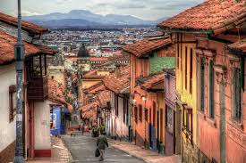
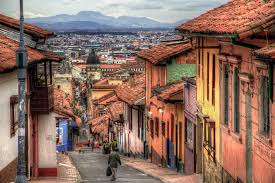
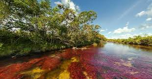
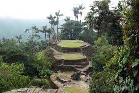
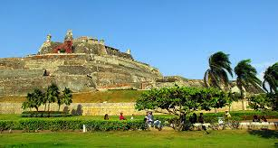
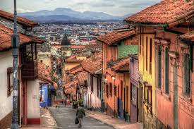

Fecha de publicación: 29/01/2018
Ubicación: Macarena-Meta-Colombia
Es un rió de Colombia que está ubicado en la Sierra de la Macarena, en el municipio del mismo nombre, en el departamento del Meta Ha sido denominado “el río de los cinco colores”, “el arco iris que se derritió” o también “el río más hermoso del mundo”, ya que en su fondo se reproducen algas de agua dulce de diversos colores, que producen la sensación de estar frente a un río de cinco colores: rojo, amarillo, verde, azul y negro, principalmente.

A lo largo de muchos años, la zona de La Macarena era una zona de cultivo de la mata de coca, controlada por la guerrilla de las Farc. Este estado de cosas generó muchos problemas sociales y de seguridad, imposibilitando la realización de viajes a esta región de Colombia. Viajar a La Macarena en aquella época podía resultar peligroso. Sin embargo, hoy en día, la Serranía de La Macarena y Caño Cristales están militarizadas y controladas por el Ejército colombiano que garantiza la seguridad en la zona. La Macarena está preparada y lista para recibir turistas.
Fecha de nacimiento: 30/10/1983
Lugar de nacimiento: Bogota-colombia
Es un reconocido fotografo, diseñador web, hombre de negocios y el más importante promotor del turismo colombiano. Mayor interés es la Fotografía de viajes, hoteles y turismo. Actualmente estoa realizando en varias ciudades la conferencia: “Fotografía de Hoteles y Auditorios: 7 ideas para aumentar ventas”. Puede estar pendiente de la programación de esta conferencia en la página web de Astrolabio. profesor de la Universidad Jorge Tadeo Lozano en las especializaciones de Periodismo Digital y Edición Digital y Multimedia.docente durante 10 semestres consecutivos de la Universidad Santiago de Cali en la asignatura Ingeniería Económica. En la Fundación Luis Amigó trabajo como docente durante dos años. profesor invitado en la Escuela de Fotografía Zona Cinco, en Bogotá. consultor para empresas tanto públicas y como privadas: Ministerio de Educación, Vicepresidencia de la República, Proexport, Orbitel, Secretaría de Gobierno, CINTEL, Gobierno en línea, Alcaldía de Bogotá, Bureau de Convenciones de Bogotá, entre otras. Especialidades: fotografía de turismo, viajes y hoteles; usabilidad, accesibilidad, Joomla, arquitectura de información, diseño de interfaz web, diseño de interacción.